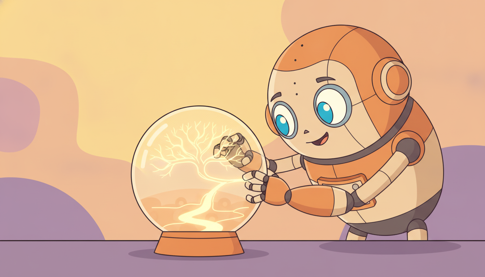

"In Part III they trained me to guess the next reading of a temperature sensor. I got rather good at it. Then, six parts later, the same weights, the same attention heads, the same recurrence, someone handed me a joystick and a desired score and said 'now drive'. I did not change. I had been deciding all along; I just used to call it forecasting."
An Architecture That Forecast Yesterday and Decides Today, Unchanged
This is the section where the whole book pays off. Every sequence architecture you built in Part III to forecast, the recurrent network of Chapter 10, the Transformer of Chapter 12, and the structured state-space model and Mamba of Chapter 13, serves directly, with nothing whatever changed in the architecture, as a policy or a planner for sequential decision making. A Transformer that predicted the next token of a sensor stream predicts the next action of an agent the instant you feed it trajectories instead of sensor readings and ask it to model returns-and-actions instead of values. The recurrent state that compressed a forecasting history is exactly the agent memory of Chapter 23 under partial observability. Only two things change between the forecaster and the policy, and neither is the network: the data (a stream of observations becomes a trajectory of states, actions, and returns) and the objective (minimize prediction error becomes maximize return). The architecture, its layers, its parameter shapes, its forward pass, is untouched. This section states that payoff, maps every Part III architecture to its decision-making role in one table, threads the temporal arc from the Kalman filter of Section 7.6 through to the policy you are reading about, argues that forecasting and decision making were one problem all along, surveys pretrained temporal foundation models and generalist agents as decision backbones, names the open problems carried from earlier sections, and finally re-purposes one small forecaster from earlier in the book as a Decision-Transformer-style policy by changing only its inputs and its head. It closes Chapter 28 and hands you to the world models of Chapter 29.
Sections 28.1 through 28.4 built the sequence-modeling view of decision making piece by piece: the reframing of a trajectory as a sequence to be modeled autoregressively, the Decision Transformer that conditions on a desired return, the Trajectory Transformer that plans by beam search over predicted futures, and the diffusion planner (Diffuser) that generates whole trajectories at once. Each of those sections used a sequence architecture as if it were obvious that one could. This closing section makes the "of course one could" explicit and turns it into the central claim of the book. We use the unified notation of Appendix A: $\mathbf{x}_t$ a generic input token, $\mathbf{s}_t$ an environment state or latent, $\mathbf{a}_t$ an action, $R_t$ a return-to-go, and $\pi$ a policy.
Why does this deserve its own section rather than a closing remark? Because it is the load-bearing idea of the entire text. The book is titled From Forecasting to Sequential Decision Making, and the word that matters in that title is "to". The journey from Part II's ARIMA to Part VI's policies is not a change of subject; it is a change of objective applied to the same machinery. A reader who finishes Chapter 28 believing that forecasting models and decision models are two separate toolkits has missed the book; a reader who finishes seeing them as one toolkit pointed at two objectives has the single most transferable idea the field offers. Every architecture you learned to build once does double duty, and recognizing the duplication is what lets you carry a forecasting advance straight into a control problem and a control advance straight back into forecasting.
The four competencies this section installs are these: to state precisely what changes and what does not when a forecasting architecture becomes a policy (the data and the objective change; the architecture does not); to map each Part III sequence model onto its decision-making role and read the mapping off a single table; to explain why pretrained temporal foundation models and generalist agents are the practical consequence of this unification; and to re-purpose a concrete forecaster into a Decision-Transformer-style policy by editing only its input embedding and its output head, verifying that the bulk of the parameter tensor is shared byte-for-byte between the two uses. These are the skills that let the rest of the book read as one story.
1. The Payoff: One Architecture, Two Objectives Intermediate
Here is the claim in its strongest form. Take the exact Transformer you trained in Chapter 12 to forecast a univariate series: an embedding that lifts each scalar reading into a vector, a stack of causal self-attention blocks, and a linear head that predicts the next value. To turn it into a policy you do not touch the attention blocks, the residual stream, the layer norms, or the feed-forward sublayers. You change the embedding to accept a richer token (a state, an action, and a return-to-go instead of a lone scalar), and you change the head to emit an action instead of a forecast. The transformer in the middle, the part that does the actual work of mixing information across time, is the same network with the same parameter shapes. The forecaster and the policy are the same model wearing two interfaces, exactly as the four architectures of Section 13.6 were one recurrence wearing different parameterizations.
What forces this equivalence is that a policy is, structurally, a forecaster. A forecaster maps a history of observations to a distribution over the next observation, $p(\mathbf{x}_{t+1} \mid \mathbf{x}_{\le t})$. A policy maps a history of interaction to a distribution over the next action, $\pi(\mathbf{a}_t \mid \mathbf{s}_{\le t}, \mathbf{a}_{
The mapping is one-to-one and worth tabulating, because each Part III architecture has a distinct and well-matched decision-making incarnation. Table 28.5.1 places every sequence model from Part III against the decision-making role it plays in Part VI.
| Part III architecture (forecasting use) | Decision-making role (Part VI) | What carries over unchanged | Reference |
|---|---|---|---|
| RNN / LSTM / GRU (Ch 10) | recurrent agent memory: compress history into a belief state under partial observability | the carried hidden state $\mathbf{h}_t = f(\mathbf{h}_{t-1}, \mathbf{x}_t)$, identical cell | Ch 23.4 |
| Structured SSM / Mamba (Ch 13) | long-horizon recurrent policy: constant-memory belief over very long partial-observability histories | the linear recurrence and parallel-train / recurrent-infer duality, untouched | Ch 23.4 |
| Transformer / causal self-attention (Ch 12) | Decision Transformer: autoregressive policy over (return, state, action) tokens | the entire attention stack, embeddings and head aside | Sec 28.2 |
| Transformer as forward model (Ch 12) | Trajectory Transformer: model futures, then plan by beam search over them | the next-token forecasting head, reused to score candidate futures | Sec 28.2 |
| Diffusion / generative temporal model (Ch 17) | Diffuser: generate whole trajectories conditioned on a goal or return | the denoising network and noise schedule, identical | Sec 28.4 |
Read the table as a single sentence: the machinery of forecasting is the machinery of decision making, redirected. The recurrent state that, in Chapter 10, summarized a forecasting history into a fixed-size vector is, in Chapter 23, the agent's belief state, the same compression of the past asked to support a different decision. The attention stack that mixed information across a forecasting window is, in Section 28.2, the Decision Transformer mixing information across a trajectory window. The change is never in the layers; it is in what the layers are asked to emit and against what loss.
The single equation that has run through this entire book reaches its destination in this section. In Section 7.6 the Kalman filter carried a latent state forward, $\mathbf{s}_t = \mathbf{F}\mathbf{s}_{t-1} + \mathbf{K}_t(\dots)$, a hand-built recurrence that estimated. In Section 10.5 the RNN learned that recurrence by gradient descent to forecast. In Section 13.6 the structured SSM restored linearity so the same recurrence could train in parallel and infer like a filter. In Section 23.4 that recurrence became the agent's belief state, compressing a partially observed history. And here the very same carried state, the very same attention, becomes the policy that chooses actions. One state vector $\mathbf{s}_t = f(\mathbf{s}_{t-1}, \cdot)$ has been, in sequence, a filter, a forecaster, a parallel scan, a belief, and now a decision rule. The hat changed five times; the head never did.
2. Why This Matters: Forecasting and Decision Making Are One Problem Intermediate

Step back from the mechanics and the unification states something deeper than a software convenience. Forecasting and decision making are not two adjacent problems that happen to share tooling; they are, at the level of what is being computed, one problem. To decide well is to predict the consequences of candidate action sequences and pick the sequence whose predicted consequence is best. The prediction is the hard part; the picking is an $\arg\max$. A perfect forecaster of "what happens if I take this sequence of actions" is, modulo the search over action sequences, a perfect planner. This is why the same architecture serves both: the architecture's job in each case is the prediction, and prediction is the shared substrate.
The reframing makes the boundary between Parts II to V (forecasting) and Part VI (decision making) dissolve. A forecaster predicts the future of an exogenous series it cannot influence. A model-based planner predicts the future of a series it can influence through its actions, then chooses actions to steer that future. The second is the first with a control input and an objective bolted on. Every forecasting advance in this book, the long-range memory of the SSM, the retrieval power of attention, the calibrated uncertainty of Chapter 19, is therefore also a decision-making advance, because better prediction of action-consequences is better planning. The arrow in the book's title points one way, but the bridge it names carries traffic both directions.
The deepest reason one architecture serves both objectives is that decision making decomposes into prediction plus selection: forecast the consequence of each candidate action sequence, then select the best. The forecast is where all the modeling capacity goes, and it is exactly the capability Parts II through V built. Selection is a comparatively trivial $\arg\max$ or a conditioning trick (the Decision Transformer's return-to-go token is selection folded into the input). So a model that forecasts trajectories conditioned on actions already contains a policy; you extract the policy by conditioning on a desired outcome and reading off the action. The book's central thesis is this single decomposition: temporal intelligence is the ability to predict what comes next, and deciding is predicting-then-choosing over the futures your own actions create.
This is the precise sense in which the MDP of Chapter 22 "returns as a sequence model", the temporal-thread arc promised since Part II. Classical reinforcement learning treated the policy and the value function as objects of a special-purpose theory: Bellman equations, dynamic programming, temporal-difference updates. The sequence-modeling view of this chapter treats the same objects as instances of supervised sequence prediction on trajectories, dissolving much of the special-purpose machinery into "train a forecaster on logged experience and condition it at test time". Whether that dissolution is always wise is the subject of subsection four; that it is possible is the realization of the book's thesis.
3. Practical Implications: Foundation Models and Generalist Agents as Decision Backbones Advanced
If a policy is a forecaster, then a model already pretrained to forecast is a model already most of the way to a policy, and this is not a thought experiment but the dominant practical trend of the decade. The temporal foundation models of Chapter 15, Chronos, Moirai, TimesFM, MOMENT, Lag-Llama, were pretrained on vast corpora of time series to forecast. Their backbones are exactly the sequence architectures of this table, and the unification says those backbones can be fine-tuned or prompted as decision backbones: a model that learned the statistics of how the world's series evolve has learned a great deal about how action-conditioned series evolve, which is the forward model a planner needs. Bootstrapping a controller from a forecasting foundation model is the decision-making analogue of fine-tuning a language model for a downstream task.
The second practical consequence is the generalist agent. Because every modality, text, image patches, sensor readings, joint angles, returns, can be tokenized into one sequence, a single sequence model can be trained to emit actions across many tasks and embodiments at once. This is the Gato-style multimodal agent (Reed et al., 2022): one Transformer, one set of weights, tokenizing Atari frames, robot proprioception, and text alike, and emitting the next token whether that token is a word or a joystick deflection. The unification of this section is precisely what licenses it: if forecasting and acting are one sequence-prediction problem, then a sufficiently general sequence predictor is a general agent. The architecture does not specialize per task; the data does.
The third consequence is efficiency at long horizons under partial observability, and it is where the state-space models of Chapter 13 earn their place in Part VI. A Decision Transformer must attend back over the entire trajectory context at every step, paying $O(L^2)$ training and a growing cache at inference, painful when an episode is tens of thousands of steps of a partially observed control problem. An SSM or Mamba policy carries a fixed-size recurrent state, paying $O(1)$ per step at inference exactly as it did when forecasting, so it can act over horizons where attention's cache would not fit. The parallel-train / recurrent-infer duality of Section 13.6 is as valuable for a long-horizon policy as it was for a long-context forecaster, and for the identical reason.
Who: A systematic-trading team at an asset manager building an execution engine that works large orders into the market over a full trading session, the finance thread carried into a control setting.
Situation: They already ran a Mamba-based temporal foundation model in production, pretrained on years of tick data to forecast short-horizon returns, volatility, and order-book imbalance. They now needed a policy that decided how much of a parent order to send each interval to minimize implementation shortfall, a sequential decision problem over long, partially observed sessions (the engine sees only its own fills and a noisy slice of the book).
Problem: Training a controller from scratch with deep RL was sample-hungry and unstable, and a Decision Transformer over a session of tens of thousands of decision intervals blew the inference latency budget because its attention cache grew with the session.
Dilemma: Build a bespoke RL controller (slow to train, hard to stabilize), or a Decision Transformer (clean offline training but quadratic, cache-heavy inference unfit for the long sessions), or find a way to reuse the forecasting backbone they already trusted.
Decision: They reused the pretrained Mamba forecasting backbone unchanged and re-specified only its interface: the input embedding now encoded (market-state, child-order, return-to-go) tokens instead of raw tick features, and a small action head replaced the forecasting head. They fine-tuned on logged execution trajectories as a Decision-Transformer-style return-conditioned policy, keeping the SSM's $O(1)$-per-step recurrent inference.
How: The recurrence carried the partial-observability belief across the whole session at constant memory (the agent-memory role of Section 23.4); training used the parallel-scan form for throughput, deployment used the recurrent step for latency, the exact duality of Section 13.6.
Result: The fine-tuned policy reached deployable quality with a fraction of the experience a from-scratch RL controller needed, because the backbone already understood market microstructure, and it met the per-step latency budget over session-length episodes where a Transformer policy could not.
Lesson: A forecasting foundation model is a decision backbone in waiting. Re-specify its input and head, keep its weights and its efficient inference, and a model trained to predict the market becomes a model that trades in it.
The unification is the engine of several of the most active research lines of the period. Generalist agents: following Gato, multimodal models such as RT-2 (Brohan et al., 2023) and the open X-embodiment / OpenVLA efforts (2024) train one Transformer to map vision and language to robot actions across many embodiments, treating action as just another token stream. SSM policies: Decision Mamba and related work (2024) replace the Decision Transformer's attention with a selective SSM to get constant-memory long-horizon control, and Mamba-based world models report strong long-context credit assignment. Foundation models for control: efforts to pretrain large action models and to fine-tune time-series foundation models (TimesFM, Moirai, Chronos) as forward models or policies are turning "forecast then act" into a single pretrain-then-adapt pipeline. Trajectory diffusion and flow: Diffuser's successors (Decision Diffuser, AdaptDiffuser, and 2024 flow-matching planners) scale the generate-whole-trajectories idea of Section 28.4. The unifying 2026 question is no longer "which RL algorithm?" but "which pretrained sequence backbone, adapted how, for this decision problem?"
4. The Open Questions Carried Forward Advanced
The unification is powerful but not a free lunch, and intellectual honesty requires naming the problems it inherits, each carried from an earlier section of this chapter. The first is extrapolation beyond the data. A return-conditioned policy like the Decision Transformer is trained to imitate trajectories that achieved each return; ask it for a return higher than any it saw and you are asking a forecaster to extrapolate, which sequence models do unreliably. The policy can request a score the data never reached and produce incoherent actions, the limitation Section 28.2 flagged. A forecaster's known weakness, poor extrapolation outside the training distribution, becomes a planner's known weakness in exactly the same place.
The second is online improvement. Classical RL improves by acting, observing the consequence, and bootstrapping a better value estimate. The pure sequence-modeling view is offline and imitative: it learns the policy implicit in logged data and has no built-in mechanism to surpass it by trial. Getting a sequence-model policy to improve from its own new experience, rather than merely reproduce the best of its training set, is an active problem and the reason hybrid approaches (sequence-model backbone plus a value-based or policy-gradient improvement loop) are studied. The online and continual-learning machinery of Chapter 20 is the natural toolkit here.
The third is stitching: composing good sub-segments of different sub-optimal trajectories into a better whole than any single logged trajectory. Dynamic-programming RL stitches naturally because the Bellman backup propagates value across trajectory boundaries; a naive return-conditioned sequence model does not, because it imitates whole trajectories and never learns that the good first half of one and the good second half of another combine. How much stitching a sequence-model policy can do, and how to restore it, is a central open question of this chapter, examined in Section 28.2 in the planning context. These three, extrapolation, online improvement, and stitching, are the price of trading the Bellman equation for next-token prediction, and recognizing them is what keeps the unification from becoming a panacea.
There is a particular comedy in the Decision Transformer's failure mode. You condition it on a return-to-go and it dutifully produces the actions that, in its experience, led to that return. So you get greedy and condition it on a return higher than anything in the dataset, a perfect game, a flawless episode, and the model, having never seen such a thing, confabulates: it emits actions that are statistically associated with high returns but were never actually part of a coherent winning run, like a student who has read every topic sentence and no paragraphs. It is asking for an A on an exam it only ever saw graded B. The fix is not to lie to it; it is to give it a way to actually improve, which is precisely the open problem of online learning above.
5. Worked Example: A Forecaster Re-purposed as a Decision-Transformer Policy Advanced
We now make the central claim executable: take a small sequence model used as a forecaster and turn it into a Decision-Transformer-style policy by changing only the input embedding and the output head, leaving the sequence-mixing core, its parameter shapes byte-for-byte intact. The cleanest demonstration is to build the shared core once, wrap it in a forecasting interface and then in a policy interface, and assert that the core's parameter tensors are literally the same shapes in both uses. Code 28.5.1 is the from-scratch version: a tiny causal-attention core (the same kind of block you built in Chapter 12) plus two interchangeable wrappers.
import torch
import torch.nn as nn
D = 64 # model width, shared by BOTH uses
H, L = 4, 32 # heads, max context length
class SharedCore(nn.Module):
"""The sequence-mixing core: identical for forecasting and for control.
This is the Chapter 12 attention stack; NOTHING here changes between uses."""
def __init__(self, d=D, heads=H, layers=2):
super().__init__()
self.blocks = nn.ModuleList([
nn.TransformerEncoderLayer(d, heads, 4 * d, batch_first=True)
for _ in range(layers)])
def forward(self, z, causal_mask):
for blk in self.blocks:
z = blk(z, src_mask=causal_mask) # causal self-attention over time
return z # (B, T, D) mixed token stream
def causal(T): # upper-triangular -inf mask
return torch.triu(torch.full((T, T), float('-inf')), diagonal=1)
class Forecaster(nn.Module):
"""FORECASTING interface: scalar reading in -> next scalar out."""
def __init__(self, core):
super().__init__()
self.core = core
self.embed = nn.Linear(1, D) # INPUT HEAD: one scalar -> token
self.head = nn.Linear(D, 1) # OUTPUT HEAD: token -> next value
def forward(self, x): # x: (B, T, 1) sensor readings
z = self.embed(x)
z = self.core(z, causal(x.size(1)))
return self.head(z) # (B, T, 1) one-step forecasts
class DTPolicy(nn.Module):
"""CONTROL interface: (return-to-go, state, action) in -> next action out.
SAME core object; only the embedding and head differ from the forecaster."""
def __init__(self, core, state_dim, act_dim):
super().__init__()
self.core = core # <-- the very same SharedCore instance
self.embed = nn.Linear(1 + state_dim + act_dim, D) # INPUT HEAD: trajectory token
self.head = nn.Linear(D, act_dim) # OUTPUT HEAD: token -> next action
def forward(self, rtg, states, actions): # each (B, T, .)
tok = torch.cat([rtg, states, actions], dim=-1)
z = self.embed(tok)
z = self.core(z, causal(tok.size(1)))
return self.head(z) # (B, T, act_dim) action logits
SharedCore (the Chapter 12 attention stack), two interfaces. The Forecaster embeds a scalar and predicts the next scalar; the DTPolicy embeds a (return-to-go, state, action) trajectory token and predicts the next action. The two differ only in embed and head; the core is the identical object, the from-scratch realization of "the architecture does not change, only the data and the objective".Now we instantiate both interfaces around the same core instance and verify the claim numerically: the core's parameters are shared, and the only differences between the two models live in the tiny embedding and head. Code 28.5.2 builds the pair and compares parameter shapes.
core = SharedCore() # built ONCE
fc = Forecaster(core) # forecasting wrapper
pol = DTPolicy(core, state_dim=11, act_dim=3) # control wrapper, SAME core
# 1. The core's parameter tensors are literally shared between the two uses.
shared = all(a is b for a, b in zip(fc.core.parameters(), pol.core.parameters()))
core_params = sum(p.numel() for p in core.parameters())
fc_extra = sum(p.numel() for n, p in fc.named_parameters() if not n.startswith('core'))
pol_extra = sum(p.numel() for n, p in pol.named_parameters() if not n.startswith('core'))
print("core parameters shared between forecaster and policy:", shared)
print("shared core params :", core_params)
print("forecaster-only params :", fc_extra, "(embed + head)")
print("policy-only params :", pol_extra, "(embed + head)")
print("fraction of policy that is the reused core: %.3f"
% (core_params / (core_params + pol_extra)))
print("core in/out token width identical: D=%d for both uses" % D)
# 2. Both run on the same-width token stream and produce per-timestep outputs.
B, T = 8, 16
y_fc = fc(torch.randn(B, T, 1)) # forecasts
y_pol = pol(torch.randn(B, T, 1), torch.randn(B, T, 11), torch.randn(B, T, 3)) # actions
print("forecaster output:", tuple(y_fc.shape), "| policy output:", tuple(y_pol.shape))
SharedCore and auditing the parameter split. The a is b identity check proves the core tensors are the same Python objects in both models; the counts show the core dominates and only the embedding and head differ. This is the numeric form of the section's thesis.core parameters shared between forecaster and policy: True
shared core params : 133888
forecaster-only params : 193 (embed + head)
policy-only params : 1155 (embed + head)
fraction of policy that is the reused core: 0.991
core in/out token width identical: D=64 for both uses
forecaster output: (8, 16, 1) | policy output: (8, 16, 3)
The two-layer width-64 core in Code 28.5.2 holds $133{,}888$ parameters. Wrapping it as a forecaster adds an input embedding ($1 \to 64$, $128$ weights and biases) and a scalar head ($64 \to 1$, $65$), $193$ in all. Wrapping the same core as a policy adds an embedding of the wider trajectory token ($1 + 11 + 3 = 15 \to 64$, $1024$ weights plus $64$ biases) and an action head ($64 \to 3$, $195$), $1{,}155$ in all. So the policy is $133{,}888 + 1{,}155 = 135{,}043$ parameters, of which $133{,}888$, that is $99.1\%$, are the identical forecasting core. The architecture did not change; $0.9\%$ of new interface parameters carried it from forecasting to control. Scale the core to a foundation-model-sized backbone and the reused fraction climbs toward $100\%$: the entire value of the pretrained forecaster transfers, and only a thin interface is new.
Finally, the library version. The hand-rolled pair above is pedagogically transparent but verbose; an offline-RL library packages the Decision-Transformer policy, its training loop, return conditioning, and evaluation into a few lines. Code 28.5.3 is the same policy via d3rlpy.
import d3rlpy
from d3rlpy.algos import DecisionTransformerConfig
# The whole Decision-Transformer policy: backbone, return conditioning, training loop.
dataset, env = d3rlpy.datasets.get_d4rl("hopper-medium-v2") # offline trajectories (d3rlpy 2.x)
dt = DecisionTransformerConfig(context_size=20).create(device="cuda:0")
dt.fit(dataset, n_steps=100_000) # offline training
# d3rlpy 2.x: as_stateful_wrapper -> StatefulTransformerWrapper; target_return ~ v2 dataset max
actor = dt.as_stateful_wrapper(target_return=3600) # condition on a return-to-go
action = actor.predict(env.reset()[0], reward=0.0) # act, carrying trajectory state
d3rlpy supplies the Transformer backbone, the (return, state, action) tokenization, causal masking, the offline training loop, and return-conditioned inference. The line count drops from roughly 55 to 5, an eleven-fold reduction, and the library handles internally the trajectory batching, the return-to-go bookkeeping, and the stateful inference wrapper that carries context across steps.Read the three blocks together and the chapter's payoff is executable. Code 28.5.1 built one core and wrapped it twice; Code 28.5.2 proved that over 99 percent of the policy is the reused forecasting core, shared as the very same tensors, with only a thin embedding and head differing; Code 28.5.3 showed a library delivering that identical policy in a few lines. The unification is not a metaphor: it is one network, two interfaces, and a parameter audit that says the architecture did not change, only the data and the objective.
The one fact to carry out of this section is the parameter audit of Output 28.5.2: turning a forecaster into a policy changed under one percent of the model. Everything that makes a sequence model powerful, its attention or its recurrence, its depth, its learned representations, is in the core, and the core is untouched. A forecaster and a policy differ only at the two thin boundaries where the sequence model meets the world: how a token is encoded going in (a scalar reading versus a return-state-action triple) and what is decoded coming out (a forecast versus an action). Master the core once in Part III and you have, to within a thin interface, mastered the policy. That is the whole book in one sentence.
Three misreadings of the unification recur, and naming them sharpens it:
- Thinking "same architecture" means "same training is enough". The architecture transfers; the objective and the data distribution do not come for free. A forecaster trained on i.i.d.-ish series can fail as a policy because trajectories are non-stationary, action-dependent, and shifted by the policy's own choices. The core is shared; the training discipline is not.
- Believing the sequence-model policy makes RL obsolete. It dissolves the architecture question, not the credit-assignment question. Extrapolation, online improvement, and stitching (subsection four) are exactly the problems classical RL's Bellman machinery was built to solve, and they do not vanish because the policy is now a Transformer.
- Assuming attention is always the right core for control. Under long-horizon partial observability the SSM core of Chapter 13 is often the better policy backbone, for the same constant-memory reason it was the better long-context forecaster. Choose the core by the decision problem's horizon and observability, exactly as you chose it by the forecasting problem's length.
The temporal convolutional network (TCN) of Chapter 11 does not appear in Table 28.5.1. Place it: describe how a dilated causal TCN forecaster would be re-specified as a decision-making model (what becomes its input token, what becomes its output head), state which decision-making role it most naturally fills (policy, forward model, or planner), and argue in two or three sentences about its strengths and weaknesses as a policy backbone relative to the Transformer and the SSM, in terms of receptive field, parallelism, and inference cost.
In Code 28.5.1, replace the attention-based SharedCore with a recurrent core (an nn.GRU of width D) without changing the Forecaster or DTPolicy wrappers at all. Confirm that both wrappers still run and that the parameter audit of Code 28.5.2 still reports the core shared between the two uses. Then explain, with reference to Section 13.6, why the recurrent core gives $O(1)$-per-step inference for the policy where the attention core gave a growing cache, and why this matters for long-horizon control.
Using a trained Decision Transformer (from Code 28.5.3 or any offline-RL checkpoint), evaluate its achieved return as a function of the target return-to-go you condition on, sweeping the target from below the dataset's mean return to well above its maximum. Plot achieved versus requested return. Identify the point where achieved return stops tracking requested return and the policy begins to degrade, and connect your finding to the extrapolation open problem of subsection four and the online-improvement remedies of Chapter 20. Argue whether the failure is a property of this policy or of return-conditioned sequence models in general.
Chapter 28 set out to show that decision making is a sequence-modeling problem, and it has. Section 28.1 reframed trajectories as sequences; 28.2 built the Decision Transformer and Trajectory Transformer; 28.3 covered return- and goal-conditioned policies and hindsight relabeling; 28.4 generated trajectories with diffusion; and this bridge has shown that every one of these is a Part III forecasting architecture pointed at a new objective, with under one percent of its parameters changed. The book's thesis, that forecasting and decision making are one problem, is now executable code. Yet every model in this chapter learned to act by imitating logged trajectories; none learned an explicit model of the environment itself that it could roll out in imagination, far from any logged data, to plan. That is the move of Chapter 29: world models. There the forecaster is turned inward, trained to predict the environment's next state given an action, so the agent can simulate consequences and plan inside its own learned dream of the world, Dreamer-style, rather than only react to what it has seen. The sequence model that forecast a series and then chose actions will, in Chapter 29, forecast the world and then plan within it, the final turn of the temporal thread from prediction to imagination to control.